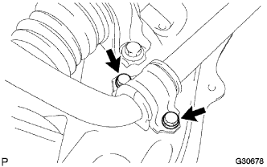
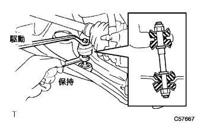
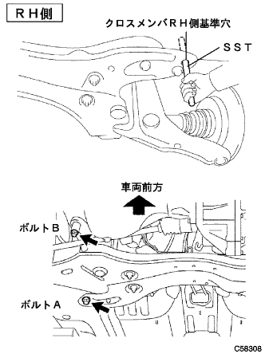
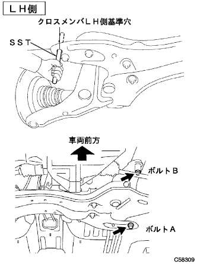

スタビライザ バー FR 取り付け |
| 1. スタビライザ バー FR取り付け |
 |
左右のフロントスタビライザバーブシユNo.1をスタビライザバーの識別マークの外側に取り付ける。
|  |
ボルト4本で、フロントスタビライザバーブラケツトNo.1 ＬＨおよびRHを介して、フロントスタビライザバーをフロントサスペンションクロスメンバに取り付ける。
| 2. フロントスタビライザ ボルト取り付け |
フロントスタビライザバークッションリテーナNo.1を4個、フロントスタビライザクッション4個、フロントスタビライザバークッションリテーナNo.2およびフロントスタビライザボルトを取り付ける。
スタビライザボルトをスパナ(10mm)で固定し、新品のナット2個で取り付ける。
|  |
反対側も同様の手順で取り付ける。
| 3. フロントサスペンション クロスメンバSUB-ASSY取り付け |
|  |
ミッションジャッキで、クロスメンバを支える。
ボルト4本で、クロスメンバをボデーに仮付けする。
SSTをクロスメンバRH側および車両RH側の基準穴に差し込み、ボルト穴位置を調整しながらボルト2本を仮締めする。
|  |
SSTをクロスメンバLH側および車両LH側の基準穴に差し込み、ボルト穴位置を調整しながらボルト2本を仮締めする。
SSTをクロスメンバRH側および車両RH側の基準穴に差し込み、規定トルクで締め付ける。
SSTをクロスメンバLH側および車両ＬＨ側の基準穴に差し込み、規定トルクで締め付ける。
ミッションジャッキをクロスメンバから取りはずす。
 |
ボルトおよびナット2個で、エンジンマウンテイングインシユレータRRをクロスメンバに取り付ける。
スリングデバイスおよびチェーンブロックを取りはずす。
| 4. フロントサスペンション アームSUB-ASSY LWR NO.1 LH取り付け |
ロワーアームASSYのステアリングナックルに取り付け、キャッスルナットで締め付ける。
新品のクリップを取り付ける。
| 5. フロントサスペンション アームSUB-ASSY LWR NO.1 RH取り付け |
| 6. プレッシャフィード チューブASSY取り付け |
 |
プレツシヤフイードチユーブASSYをステアリングリンクASSYに仮付けする。
ボルトで、プレツシヤフイードチユーブASSYのクランプをクロスメンバに取り付ける。
 |
ユニオンナットレンチ17を使用して、プレツシヤフイードチユーブASSYを本締めする。
| 7. タイロッド エンドSUB-ASSY LH取り付け |
タイロッドエンドをステアリングナックルに取り付け、キャッスルナットで締め付ける。
新品のコッターピンを取り付ける。
| 8. タイロッド エンドSUB-ASSY RH取り付け |
| 9. エンジンアンダ カバー LH取り付け |
スクリュー2個およびボルト2本で、エンジンアンダーカバーLHを取り付ける。
| 10. エンジンアンダ カバー RH取り付け |
スクリュー2個およびボルト2本で、エンジンアンダーカバーRHを取り付ける。
ナットを、締め付ける。
| 11. フロントタイヤ取り付け |
| 12. ステアリングスライディング ヨークSUB-ASSY接続 |
 |
クリップAを付け、ホールカバーおよびクリップBをボデーに取り付ける。
 |
合わせマークを合わせて、ボルトでスライディングヨークを取り付ける。
 |
ステアリングホイール回転防止用シートベルトを取りはずす。
| 13. ステアリングコラムホールカバー プレート取り付け |
クリップ2個でホールカバープレートを取り付ける。
| 14. パワーステアリングフルード補充 |
| 15. パワーステアリングフルードエア抜き |
参照)| 16. フロントホイールアライメント点検·調整 |
参照)